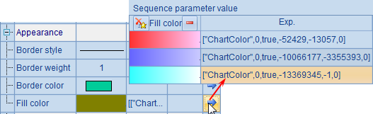
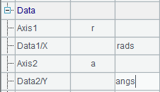
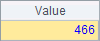
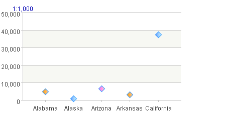

When plotting a scatter chart, you can set the marker style and fill color, properties of the boundary lines and other properties. For example, modify A6¡¯s chart parameters to set the appearance properties for the dot chart:

Set Marker style as the shape of diamond, change Line color to light blue, increase Marker weight to 6 pixels and change Fill color to pink gradient. With the modifications, the plotting result is:

As can be seen, the appearance of the dots has changed according to the settings. The Marker weight property sets the pixels of the dot¡¯s radius. To make the sizes of the dots match their logical coordinates, set Radius 1 and Radius 2 properties which respectively correspond to the logical axes - Axis1 and Axis 2 - in the data property setting. The width and height of the dots will be calculated from the specified logical coordinate values.
To have each dot has a distinct appearance, use a sequence for a certain chart parameter. Among A6¡¯s plotting parameters, modify the fill colors of the dots:

Then A7¡¯s plotting result is:

When using a sequence to set the properties, the sequence will be used repeatedly if its length is short.